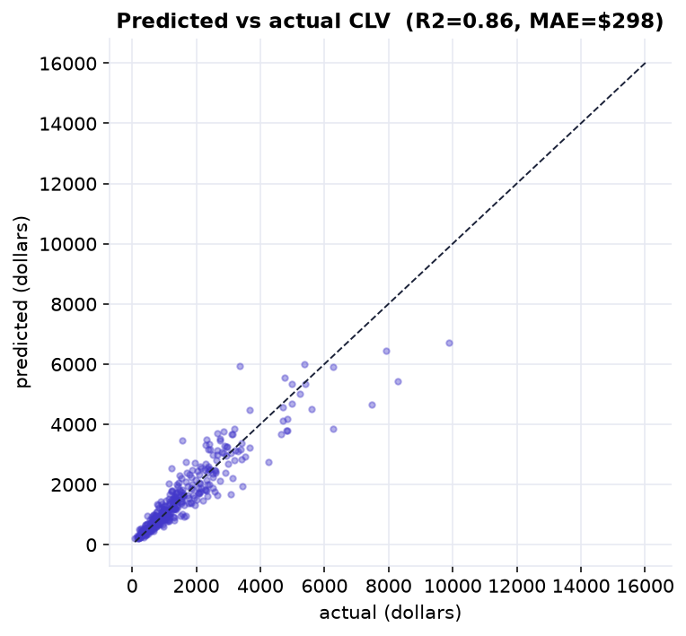
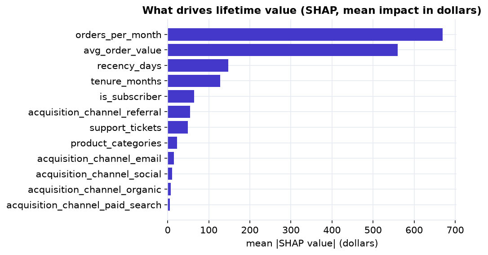

When the thing you want to predict is a continuous dollar amount, the task is regression, not classification. Customer lifetime value (CLV) is the classic example: predict the revenue a customer will generate over the next 12 months from what you already know about them, then use those predictions to rank customers and target retention where it earns the most. A good model does two jobs at once, it ranks well, and its explanations reveal what drives value.
It is the regression counterpart to the classification and clustering case studies of Part XXI: a ColumnTransformer pipeline, a gradient-boosted-trees model, honest error metrics against a baseline, residual diagnostics for a skewed target, and SHAP to turn the model into an explanation the business can act on.
The Business Question, and the Data (Steps 1–2)
Marketing has a fixed retention budget and wants to spend it on the customers most worth keeping. So the question is
a regression one: for each of 1,500 customers, predict their next-year value from their behavior and
account. The target, lifetime_value, is a dollar amount; the features are things known today, order
frequency and size, recency, tenure, support load, subscription status, and acquisition channel.
One row per customer: tenure_months, avg_order_value,
orders_per_month, recency_days, product_categories,
support_tickets, is_subscriber, and acquisition_channel (organic, paid
search, social, referral, email), with the target lifetime_value.
Look Before You Model (Step 3)
Lifetime value is strongly right-skewed: the mean is about 1,612 dollars but the median is only 1,194 (skew ≈ 2.8). Most customers are modest, and a few whales are worth ten times the median. That shape drives two decisions: evaluate with RMSE and MAE rather than a single average, and reach for a tree-based model, which handles skew and non-linearity without a transform.
Build the Pipeline, and Beat the Baseline (Steps 4–7)
A leakage-safe pipeline, and a bar to clear
A ColumnTransformer passes the numeric features straight through and one-hot encodes the single
categorical column, all inside a Pipeline with the model, so no preprocessing ever sees the
test set. Then we set a baseline: predict every customer as the training-set mean. That naive rule
is off by about 977 dollars on average. Any real model has to beat it to earn its complexity.
Gradient-boosted trees, cross-validated, then scored on held-out customers
A HistGradientBoostingRegressor, scikit-learn's fast cousin of XGBoost and LightGBM, cross-validates to
an R-squared around 0.83 on the training set, so the signal is real. On the 25% of customers it
never saw, it explains about 86% of the variance (R-squared 0.857) with an average error of just
298 dollars, less than a third of the baseline, cutting the average error by 69%.

Predicted versus actual on customers the model never saw. Points hug the diagonal, tightest for the many ordinary customers and looser for the rare whales, exactly the footprint of a skewed target. R-squared 0.86, MAE 298 dollars.
Diagnose the Residuals, and Explain the Drivers (Steps 8–9)
A good score can still hide a biased model, so we check the residuals. They are centered near zero (no systematic over- or under-prediction), but their spread widens for high predictions: the model is dollar-precise on ordinary customers and fuzzier on whales, the classic footprint of a skewed target. That is fine for ranking; if we needed a precise figure per whale, we would model log value or quote a prediction interval (both explored in the Take It Further notebook).
Then the payoff: SHAP attributes each prediction to its features and, averaged, ranks what moves value most. Order frequency and average order value dominate, together they are the spend rate, followed by recency and tenure (loyalty), then subscription and the referral channel. Because SHAP works per customer, you can show exactly why the model values any individual.

SHAP importance: the mean dollar impact of each feature on the prediction. How often and how much customers order dominate; recency and tenure follow. This is not just a leaderboard, SHAP explains each customer individually, which is what makes a prediction trustworthy.
From Prediction to Decision, and the Memo (Steps 10–12)
The point of the model is an action. Ranking the held-out customers by predicted value and taking the top 10% captures a large share of the actual value: those customers average about 4,402 dollars against an overall 1,525. A retention budget aimed there, rather than sprayed evenly, is where the model pays for itself, and because the ranking is SHAP-explainable, each offer can be tailored to that customer's value drivers.
Memo to the marketing team
We built a model that predicts each customer's next-12-month value from their behavior. On customers it had never seen, it is accurate to within about 298 dollars on average, roughly a third of the error of guessing the average, and it explains about 86% of the variation in value.
What drives value
The biggest levers are how often and how much customers order, followed by how recently they bought and how long they have been with us. Subscribers and referred customers are worth more, but that describes who is valuable, not a lever to pull, correlation is not causation.
The recommendation
Focus retention spend on the top decile by predicted value, who hold a large share of total value, with offers tailored to each customer's drivers. Re-check the model as new data arrives, since it assumes behavior stays stable.
One caution
Trust the ranking more than the exact dollar figure for whales, where the model is least precise. If a per-customer number is needed there, use the log-value model or a prediction interval.
Run the whole project in Python
The companion notebook is the full 12-step regression workflow: it frames the CLV question, explores the skewed target, builds the leakage-safe ColumnTransformer pipeline, sets a mean baseline, cross-validates and fits a HistGradientBoostingRegressor, scores it with RMSE, MAE, and R-squared against the baseline, diagnoses the residuals, interprets the drivers with SHAP, and turns the ranking into a targeting decision, all library-first with scikit-learn and shap.
View opens the rendered notebook instantly.
Open in Colab runs it live. To run locally, install numpy, pandas,
matplotlib, scikit-learn, shap, and openpyxl.
🎓 Key Takeaways
- ✓A dollar target is regression: judge it by MAE and RMSE against a baseline, not by "accuracy".
- ✓Always beat a baseline: predicting the mean was off by 977 dollars; the model cut that to 298, a 69% reduction.
- ✓One leakage-safe pipeline: the ColumnTransformer and model together mean preprocessing is fit only on training data.
- ✓Diagnose the residuals: near-zero bias but wider spread on whales, the honest footprint of a skewed target.
- ✓Explain, then act: SHAP names the drivers (frequency, order value, recency, tenure) and the ranking targets the top decile, where value concentrates.
Take It Further
Five ways to push the model further in the companion notebook:
Tame the skew with a log target
Model log-value, convert back with expm1, and see whether the errors get more even.
np.log1p(y), compare MAE on whales versus the crowd.A fair model leaderboard
Drop linear regression and a random forest into the same pipeline and compare by cross-validated R-squared.
Prediction intervals, not just points
Use quantile regression to give each customer a 5–95% range, then check its coverage.
HistGradientBoostingRegressor(loss="quantile", quantile=...).Explain one customer
Decompose a single high-value prediction into its SHAP contributions that sum to the prediction.
shap_values for one row, plot the per-feature push.From prediction to profit
Simulate a retention campaign and measure the extra profit the model's ranking earns over targeting at random.
All five, worked in a companion notebook
A second notebook, Take It Further, rebuilds the Chapter 139 model and works every extension with visuals and explanations: a log-target comparison, a three-model leaderboard, quantile prediction intervals with a coverage check, a per-customer SHAP explanation, and a targeting-ROI simulation.
Quiz: Test Yourself
Eight questions on the regression workflow, from framing and baselines to residuals and SHAP. Answer them, hit Check Answers, and keep refining until you score 100%. Your progress is saved.
We predicted a value for each customer. Next we predict over time with outside information. Chapter 140 · Case Study: Forecasting with Drivers builds a forecast that uses external predictors, not just the past of the series itself.